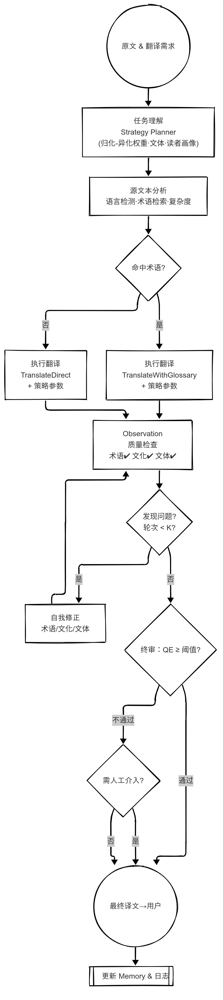

练习：翻译智能体的设计与实现#
请首先设计一个功能更完善的翻译智能体，然后使用LangGraph（或其他Agent框架）实现一个翻译智能体。
示例 StateGraph
{kind=link}
流程图解释：
0. 预初始化（与术语模块并列新增组件）#
组件 |
作用 |
|---|---|
Strategy Planner |
根据任务简报、目标受众、领域标签，输出推荐的翻译策略参数（Domestication ↔ Foreignization 0-1 权重、直译-意译阈值、敬语等级、文本功能等） |
Style Adapter |
保存品牌或作者既定风格指南（语域、读者级别、排版规范、用词偏好等），并在生成与修正环节注入提示 |
Cultural-QE |
评估译文的文化恰当度与可读性，可基于 BLEURT、COMET + 规则（如借词过多／不够本土化等） |
ReAct 流程（升级版）#
仍遵循 Thought → Action → Observation 循环，但 Thought 阶段拆分为 T0（任务理解） 与 T1（句级推理），中间插入 Strategy Planner。
T0 — 任务理解 & 策略规划#
提取翻译简报
来源：用户显式说明或默认配置
关键字段：目标语言/地区、读者画像、用途（学术/营销/法律…）、品牌风格
调用 Strategy Planner
params = planner.decide( audience="技术从业者", domain="软件文档", prefer="准确优先", brand_tone="neutral" ) # 返回示例 { "domestication": 0.3, # 越低 → 趋向异化 "literal_weight": 0.8, # 句法保留度 "formality": "neutral", "preserve_ids": true }
更新 Memory：记录本次策略，以便后续同域调用保持一致。
T1 — 源文本局部推理#
语言检测、术语检索、句型复杂度分析
附加决策：
if params.domestication < 0.5: strategic_note = "保留源文化元素并注释" else: strategic_note = "用本地类似概念替换"
A1 — 翻译执行（携带双重提示）#
{
"tool": "NMT_API",
"payload": {
"text": "...",
"glossary": {...},
"system_prompt": [
"You are a professional translator.",
"DomesticationWeight=0.3", // 异化偏高
"LiteralWeight=0.8",
"Formality=neutral",
"StrategicNote=保留源文化元素并通过圆括号短注释",
"StyleGuide: ①简洁句 ②技术术语准确 ③避免口语化"
]
}
}
实现细节：在 LangGraph / LangChain 中可用
prompt_template.format(**params)注入。
O1 — 质量与策略验证#
术语一致性（如前）
Cultural-QE
指标：读者易读性、外来语密度、文化实用度
输出：
cultural_flags: [“过度本土化 - 缺少源文化说明”]
Style Check：对照 Style Adapter 检查格式、语域
若出现术语或文化冲突 → 进入 A2 自我修正。
A2 — 策略驱动的自我修正#
文化偏差
若过度本土化：恢复外来专名，并添加释义
若过度异化：选用本地对应概念，保留原词拼写作括注
文体不符
调低／调高句子简洁度，或替换敬语
术语违例
按上一版流程回滚修正
T2 — 终审#
集合 QE score、glossary_violations、cultural_flags
若全部 < 阈值 → Pass
否则requires_human_review: true
Final Answer — 回复用户#
（若策略有显式说明需求，可在回复顶部简要标注）
### 翻译（技术语准确 + 略偏异化）
...
> 译者说明：为保留原文文化元素，专有名词沿用英文并在首次出现时括注中文释义。
后台同时：
Memory 更新策略使用次数 → 用于长期个性化
日志 记录策略 → 可做 RLHF / DPO
在实际 Agent 中落地的关键点#
维度 |
做法 |
|---|---|
个性化策略偏好 |
在 Memory 中维护 |
动态调节 |
若用户后来要求「地道本地化」，即时修改 |
多语种 |
Strategy Planner 针对不同目标语种设定默认权重（例如日语技术文档常保留英文专名） |
评估指标积累 |
Cultural-QE 打分和用户反馈可反哺，微调 LoRA 获得更稳的风格控件 |
这样，Translation Agent 就形成了一个 术语一致性 + 翻译策略可控 + 文化／文体自评 + 多轮修正 的完整闭环，可满足从技术文档到文学内容等多样化场景的生产需求。